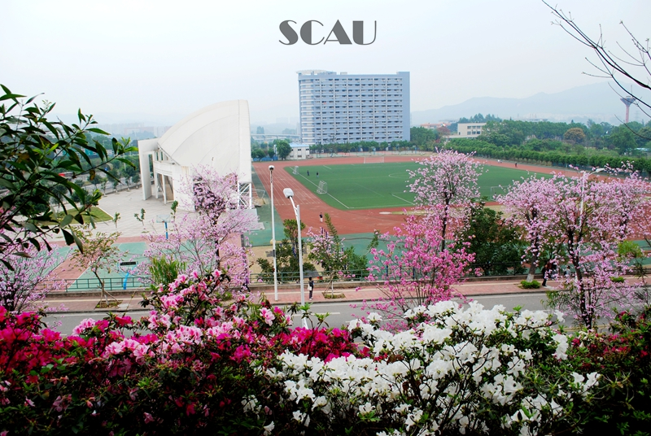

欢迎来到华南农业大学Welcome To SCAU
五湖四海一片林，花草虫鱼鸟兽神。每逢春暖花开季节,树上万紫千红繁花似锦,灿若红霞,偶尔点点素白,这就是紫荆花开，多少人为之惊艳，多少学子为之赞美。手绘、明信片、漫画，每一处都记录了它的美丽。
行政楼——红墙绿瓦，中西合璧的新典范。行政楼位于鄱阳湖正北上方，与稻香草海共同成为广大师生、校友合影留念、赏花拍照的新景点。
湿地公园——位于行政楼前，繁盛的树木，夏天盛开的荷花，引得无数驻足。办公楼下绿水荡，“鄱阳湖”上映红墙，来华农必游此处。
田家炳综合训练馆--流线型的外形大方优美，篮球场、羽毛球场、乒乓球室、健身房、舞蹈室等等一应俱全，有颜值更有内涵。
南校门--在茶山草海开阔视野的映衬下，校门牌楼巍峨雄伟、威严壮观、气势磅礴。牌楼目前成为校外车辆进入校园的主要入口，也是留影留念的绝佳背景。
树木园--建于1972年，经过几十年的栽种培育，现已成为集教学科研实验考察功能于一身的园区。其占地面积约225亩，是广东省高校中占地面积最大的校内园林。
紫荆桥--多年来，华农一直致力于将“紫荆校园”打造为学校的精美名片，而紫荆桥是打造“紫荆校园”的标志性景点。桥旁种满紫荆花，三月花开，粉色彩虹因此绽放。

泰山运动场--标准足球场、环形塑料跑道、篮球场、沙池、大型观众席、更衣室等设施齐全。每年的动物、宠物展期间，这里便是人与动物欢乐的海洋。
第四教学楼--在教四，可以看到矗立的钟楼，充满浪漫气息的情人坡，到了晚上，周末，还能看到一群又一群身怀才艺的学生在架空层施展身手、挥洒青春。
启林区运动场--网球场是启林区运动场的亮点之一。此外，每年的新生军训在启林区运动场均有会操表演，声势浩大，朝气蓬勃。
第五教学楼（外国语学院）--华农最大最新的教学楼。A、B、C、D四栋教学楼布局巧妙，各有千秋。每栋楼配有多座宽敞的电梯，保证了人流多却有序。
真维斯学生活动中心--以真维斯公司命名，以表达对“真维斯”捐资的感谢外，也希望学生学习真维斯创新拼搏的精神。常年有大小演出在此举行，人与建筑争艳。
昭阳湖--中午时分,阳光洒在院士广场中央的昭阳湖面。昭阳湖因形如圆月而得名。顺着水波看去,可以发现零星的小野鸭。八位院士的白色雕像坐落在湖畔,栩栩如生,灵动睿智,使整个湖泊儒雅高洁,意味深厚。
宁荫湖--宁荫湖边、三角市坡地，红艳艳的簕杜鹃、映山红与鸟雀们叽叽喳喳地叫开了，她们争抢着比鸟儿更高地攀上苹婆树的枝头，或者更低地斜伸入宁荫湖的水中，骄傲地把自己的红色花朵变成朝阳、落日或者晚霞。
西湖--华农四大神兽之一“大白鹅”便生活在西湖之中，常见神兽排成一字队形从岸上走过，从湖中游过，引得众人纷纷拍照。西湖中还生活着颜色鲜艳的华农大锦鲤，西湖拱桥上，行人走过，如诗如画。